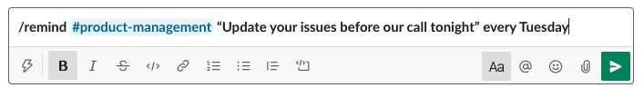

How to Set Reminders in Slack
Slack is a communication and collaboration platform that organizes conversations into topics, groups or private messages. Each topic or group is called a Channel. Hack for LA uses slack to allow teams to connect, discuss and work on projects collectively. There are channels set up for both specific projects, and specific functional roles.
What is Slack?
Slack is a communication and collaboration platform that organizes conversations into topics, groups or private messages. Each topic or group is called a Channel. Hack for LA uses slack to allow teams to connect, discuss and work on projects collectively. There are channels set up for both specific projects, and specific functional roles.
When to use Reminders ⏰

Slack has a function that **allows you to set up an automatic reminder with a tailored message **sent out by the Bot at a specified time.
Who uses reminders
- Yourself
- Someone else
- The Whole Channel
Type of Reminders
- Remind the team about upcoming team meetings
- Remind people to update issues by a certain date
- Remind yourself to check back in with someone at a certain time
How to Set Up Reminders ✅
Reminders can be set up in two ways:
Option 1: by Navigation
- Navigate to the channel you want to set up the reminder \

-
Click the lightning bolt at the bottom of the message window

-
Then either
- filter for and select the reminder option in the Suggested list \
 \
\
2. Type in “reminder” \
Go ahead and set your reminder. Click on the “create” button

- and you should see this confirmation.

Option 2: by Direct Entry
-
In the message box, type /remind

- To Whom? @ or #
If to a specific person: @someone
If the entire channel: #channel - In quotes write the reminder text you want the Bot to send out.
- Last, input day and time you want the Bot to send out the message. NOTE: the time zone listed will be your time zone.
Examples
